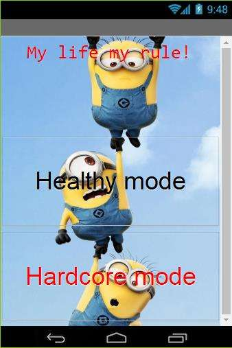
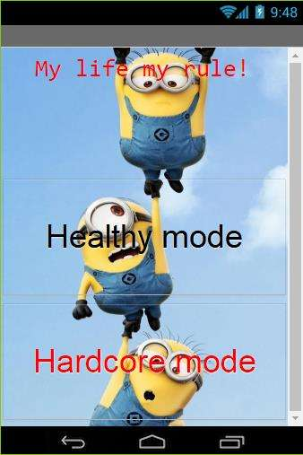

The purpose of this app is to help the people who lacks of ability of time managing and provides them a perfect schedule for their weekends.We executed our project through Scrum process and focused more on the plan and build parts. We first planned what the each screen will look like and how each screen processes to the calculation part. Then I started to build codes for each screen with algorithms and buttons. Finally, we both together test for bugs.We use listpicker at first so users can choose their sleeping and eating hours. Then I saved the variables that the user chose and I will multiply the sleeping hour number and eating hour number. When the sleeping hour and eating hour multiply to a number, I assign them a certain schedule. Finally, we will generate their schedule by calculating the remaining activity time and homework time. Users now have an unique schedule for the weekend. At the end, we will notify them and make sure that the app user is following our schedule by sending notification.


 

In the 1.4.7 images artist project, me and my partner decided to make changes the image "nature"
Pictures above are our changes made to the image.